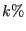
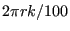
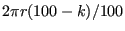
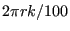
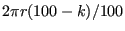

Next: Two-node 2D beam element Up: Element Types Previous: Six-node axisymmetric element (CAX6) Contents
This is a general purpose quadratic axisymmetric element. Just as the shell, plane stress and plane strain element it is internally expanded into a C3D20 or C3D20R element according to Figure 73 and the node numbering of Figure 72 applies.
For axisymmetric elements the coordinates of the nodes correspond to the radial direction (first coordinate) and the axial direction (second or y-coordinate). The axisymmetric structure is expanded by rotation about the second coordinate axis, half clockwise and half counterclockwise. The radial direction corresponds to the x-axis in the 3D expansion, the axial direction with the y-axis. The x-y plane cuts the expanded structure in half. The z-axis is perpendicular to the x-y plane such that a right-hand-side axis system is obtained.
The same rules apply as for the plane strain elements, except that in-plane conditions in a plane strain construction now correspond to radial plane conditions in the axisymmetric structure. Expressed in another way, the z-direction in plane strain now corresponds to the circumferential direction in a cylindrical coordinate system with the y-axis as defining axis. Notice that nodes on the x-axis are not automatically fixed in radial direction. The user has to take care of this by using the *BOUNDARY card
Compared to plane strain elements, the following conditions apply:
A special application is the combination of axisymmetric elements with plane
stress elements to model quasi-axisymmetric structures. Consider a circular
disk with holes along the circumference, Figure 76. Assume that the holes take up 
of the circumferential width, i.e. if the center of the holes is located at a
radius  , the holes occupy
. Then, the structure is reduced to a
two-dimensional model by simulating the holes by plane stress elements with
width
 and everything else by axisymmetric elements. More
sophisticated models can be devised (e.g. taking the volume of the holes into
account instead of the width at their center, or adjusting the material
properties as well [38]). The point here is that due to the expansion into
three-dimensional elements a couple of extra guidelines have to be followed:
, the holes occupy
. Then, the structure is reduced to a
two-dimensional model by simulating the holes by plane stress elements with
width
 and everything else by axisymmetric elements. More
sophisticated models can be devised (e.g. taking the volume of the holes into
account instead of the width at their center, or adjusting the material
properties as well [38]). The point here is that due to the expansion into
three-dimensional elements a couple of extra guidelines have to be followed:
If an axisymmetric element is connected to a structure consisting of 3D elements the motion of this structure in the circumferential direction is not restricted by its connection to the 2D elements. The user has to take care that any rigid body motion of the structure involving the circumferential direction is taken care of, if appropriate. This particularly applies to any springs connected to axisymmetric elements.
Notice that structures containing axisymmetric elements should be defined in the global x-y plane, i.e. z=0 for all nodes.